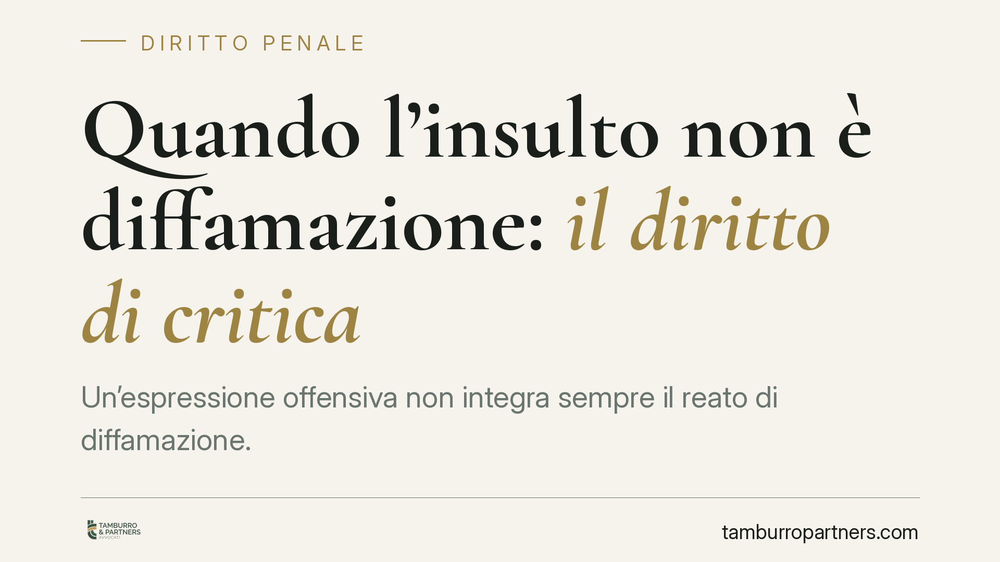

Quando l'insulto non è diffamazione: il diritto di critica
Un'espressione offensiva non integra sempre il reato di diffamazione. La giurisprudenza riconosce che la critica, anche aspra, può essere scriminata quando poggia su fatti veri, risponde a un interesse collettivo e rispetta la continenza. Vediamo come funziona questo equilibrio tra libertà di manifestazione del pensiero e tutela della reputazione, e quali limiti restano invalicabili.

Il fatto e la questione giuridica
Il confine tra critica legittima e diffamazione è tra i più discussi in sede penale. Capita spesso che un giudizio tagliente su un professionista, un amministratore o un dirigente venga percepito come offensivo dal destinatario e sfoci in una querela ai sensi dell'art. 595 del codice penale.
Non ogni espressione sgradevole, però, è penalmente rilevante. La giurisprudenza di legittimità ha più volte affermato che la critica, pur formulata con toni accesi, può essere coperta dalla scriminante del diritto di critica, con conseguente non punibilità della condotta.
Inquadramento normativo
La diffamazione è disciplinata dall'art. 595 c.p., che punisce chi offende l'altrui reputazione comunicando con più persone. La condotta, però, può essere scriminata.
Il fondamento tecnico è l'art. 51 del codice penale, che esclude la punibilità quando il fatto costituisce esercizio di un diritto. Nel nostro caso il diritto è quello di manifestare liberamente il proprio pensiero (art. 21 della Costituzione), che include la critica.
La giurisprudenza consolidata subordina l'operatività della scriminante a tre requisiti:
- Verità del fatto: l'espressione deve agganciarsi a un fatto vero e verificabile, non a circostanze inventate.
- Interesse pubblico: la vicenda deve avere un rilievo che vada oltre la sfera privata. La condotta di chi riveste una posizione di responsabilità — un manager, un dirigente, un amministratore — assume rilievo collettivo quando incide su interessi di terzi, su una collettività di lavoratori o su rapporti economici rilevanti.
- Continenza: l'espressione deve restare proporzionata e funzionale al giudizio, senza trascendere in attacchi gratuiti.
Critica e cronaca non sono la stessa cosa
Va distinta la critica dalla cronaca. Nella cronaca prevale l'esposizione asettica del fatto. Nella critica, invece, il requisito della continenza viene applicato in modo più elastico, perché la critica è per sua natura un giudizio soggettivo e può essere espressa anche con durezza.
Questa maggiore elasticità, tuttavia, non è un via libera. Il principio è semplice: se togli il fatto, deve restare un giudizio, non solo un insulto. L'espressione forte è tollerata finché serve a commentare un comportamento concreto; quando se ne distacca, diventa pura offesa.
Il limite che resta invalicabile
Attenzione a non semplificare. L'aggancio al fatto vero non basta da solo a mettere al riparo chi si esprime. La continenza, secondo l'orientamento costante della Cassazione, esclude comunque gli epiteti puramente infamanti, scurrili o il linguaggio gratuitamente aggressivo, cioè quelle espressioni che non aggiungono nulla al giudizio e servono soltanto a umiliare la persona.
In altre parole: anche davanti a un fatto vero e di interesse pubblico, l'offesa fine a se stessa — non necessaria a esprimere la critica — resta diffamatoria. La scriminante copre il giudizio severo, non l'insulto gratuito.
Implicazioni pratiche
Per chi si ritiene offeso, questo significa che non ogni frase sgradevole è automaticamente punibile: occorre verificare se l'espressione sia realmente scollegata da fatti veri o se, invece, ne costituisca un commento.
Per chi esprime una critica pubblica, la lezione è speculare: tanto più si resta ancorati a fatti documentabili e si evitano escursioni puramente offensive, tanto più l'espressione rientra nell'esercizio legittimo di un diritto.
Cosa fare in concreto
- Verifica l'aggancio al fatto: controlla se l'espressione contestata si riferisce a un comportamento vero e documentabile della persona.
- Isola l'insulto dal giudizio: chiediti se, eliminato il fatto, resti un'opinione o soltanto un'offesa fine a se stessa.
- Valuta l'interesse pubblico: considera se la vicenda riguardi una sfera meramente privata o incida su interessi collettivi, economici o professionali.
- Conserva le prove: raccogli e archivia il contenuto nella sua forma integrale e nel suo contesto, perché il tono va letto nel complesso del discorso.
- Prima di proporre querela, valuta se l'espressione sia davvero priva di collegamento con fatti veri: la scriminante del diritto di critica può escludere la punibilità e rendere infondata l'azione.
Disclaimer
Contributo informativo a cura di Tamburro & Partners Avvocati. Non costituisce parere legale.
Ogni condominio ha una storia a sé.
Se gestisci un'amministrazione e vuoi un confronto su una specifica questione condominiale, scrivi allo studio. Ti rispondiamo entro un giorno lavorativo.